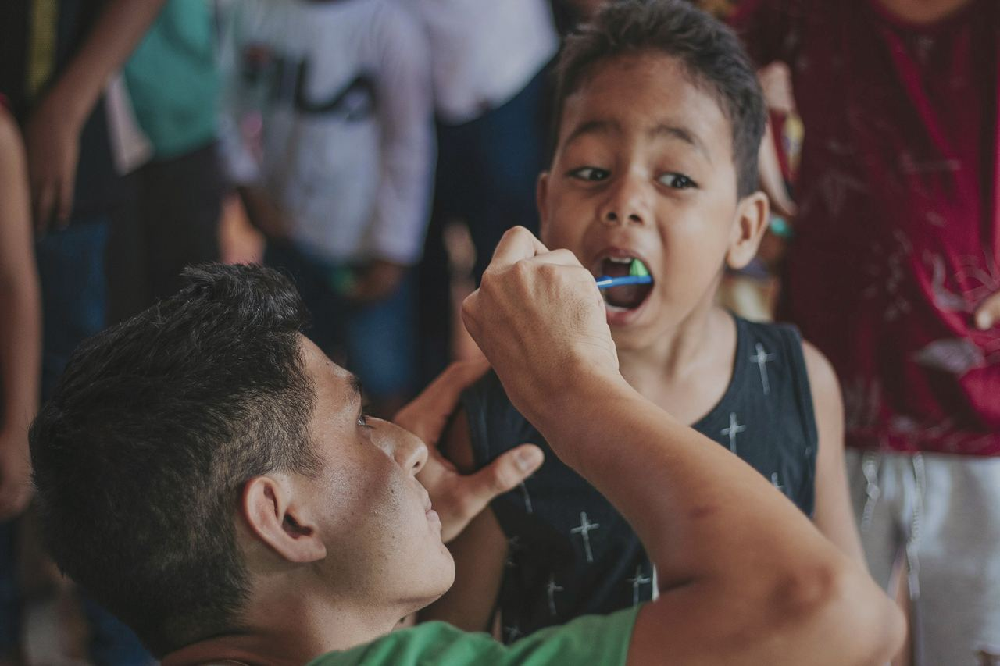
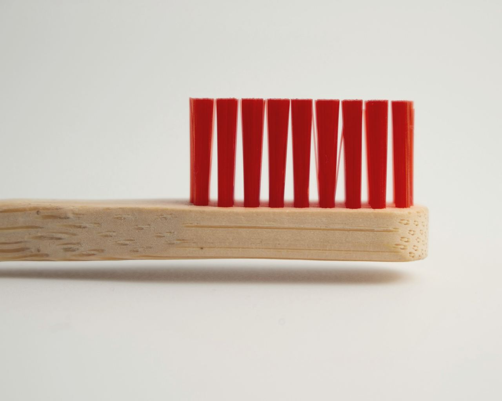
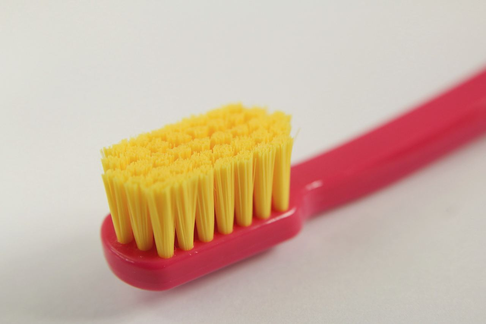
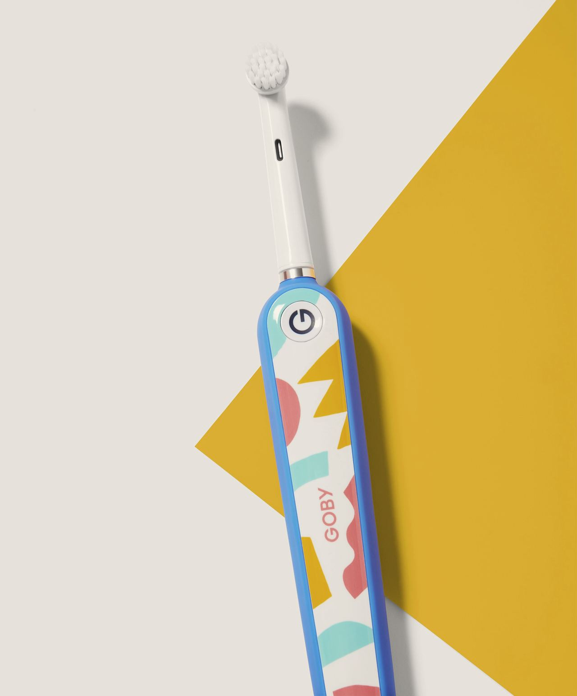
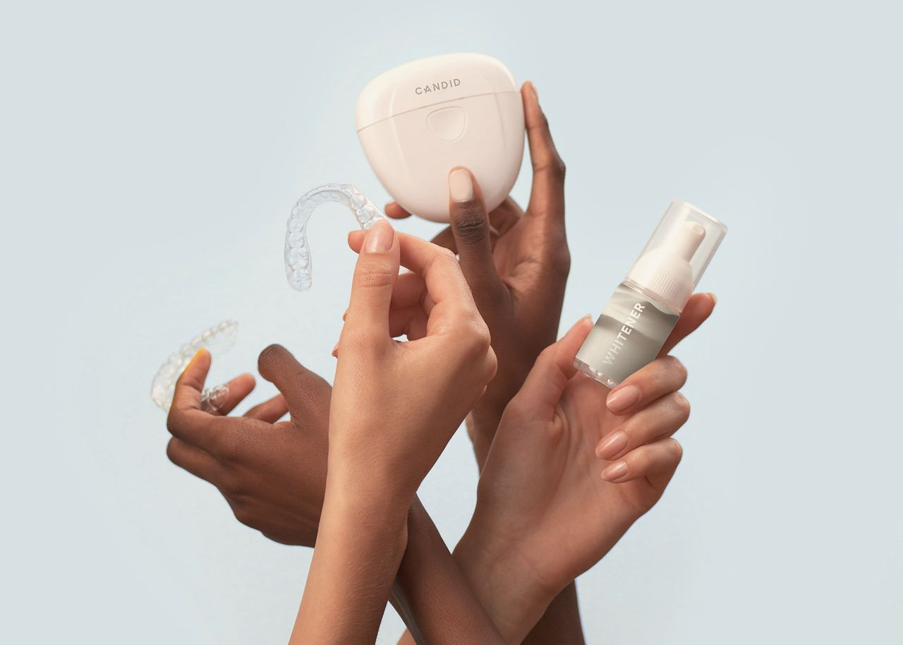

Paediatric dentistry
Kids’ dentistry
Gentle, unhurried dental care for babies, children and teenagers, with parents welcome in the room.
First visit by the first birthday
Or within six months of the first tooth, whichever comes first.
Tooth decay in young children, called early childhood caries, is common in India and often starts before parents notice it. Early visits find it while it is small, and teach the habits that prevent it. Whether you call it paediatric or pediatric dentistry, the aim is the same.
International paediatric dentistry guidance, also argued for India in the Journal of the Indian Society of Pedodontics and Preventive Dentistry (2024), “Visit to the Dentist at Age One” policy paper.
About 47%
of young children in India have early childhood caries.
Devan, Ramanarayanan & Janakiram, Indian Journal of Public Health, 2022: a meta-analysis of 71 studies.
A guide by age
What we check, care at home, and habits worth watching, at each stage.

Ages 0 to 2
- What we check
- The first teeth, the gums and how the teeth are coming in, and the earliest signs of decay.
- Care at home
- Wipe the gums after feeds. Once teeth arrive, brush twice a day with a smear of fluoride toothpaste the size of a grain of rice.
- Habits
- Avoid putting your child to sleep with a bottle of milk or juice. Thumb-sucking and dummies are normal at this age.

Ages 3 to 5
- What we check
- All twenty baby teeth, decay between the back teeth, and how the bite is developing.
- Care at home
- A pea-size amount of fluoride toothpaste, twice a day, with an adult brushing or helping.
- Habits
- Keep sweet snacks and drinks to mealtimes. Night-time bottles should have stopped.

Ages 6 to 9
- What we check
- The first adult molars and front teeth, sealants on the new molars, and a first orthodontic check around age 7.
- Care at home
- Brush twice a day with fluoride toothpaste, with an adult checking until your child brushes well alone.
- Habits
- Thumb-sucking that continues as the adult front teeth arrive can affect how they grow; we can help. Mouthguards for contact sport.

Ages 10 to 14
- What we check
- Baby teeth falling out on time, adult teeth coming in, crowding and the bite; braces or aligners if needed.
- Care at home
- Twice-daily brushing with fluoride toothpaste, and cleaning between the teeth.
- Habits
- Sugary and fizzy drinks between meals. Mouthguards for sport.
Your child’s first visit, step by step
Step 01
A short, unhurried visit
Your child can sit on your lap. We keep the first visit brief.
Step 02
Tell, show, do
We explain each step in simple words, show the instrument, and only then use it.
Step 03
A gentle look
We count the teeth and check the gums and bite. Nothing is forced; if your child is not ready, we try again next time.
Step 04
Advice for you
Brushing, toothpaste, diet and habits, and when to come back.
Questions, answered
By the first birthday, or within six months of the first tooth appearing.
Yes. They let your child chew and speak properly, and they hold space for the adult teeth. Decay in baby teeth can cause pain and infection.
We go at your child’s pace, explain everything first and never force anything. Short, positive visits early on make later visits much easier.
Dental X-rays use a very small dose. We take them only when they will tell us something we cannot see, and we use the fewest needed.
Check-ups and cleaning, fluoride, pit and fissure sealants, an early orthodontic assessment around age 7, and braces or clear aligners for children and teens who need them.
A baby tooth should not be put back: press a clean cloth on the gum and bring your child in. An adult tooth should be held by the crown, rinsed briefly in milk, put back or kept in milk, and seen within 30 to 60 minutes. See dental emergencies.
Book your child’s first visit
A short, gentle visit to meet us, look at the teeth and answer your questions.